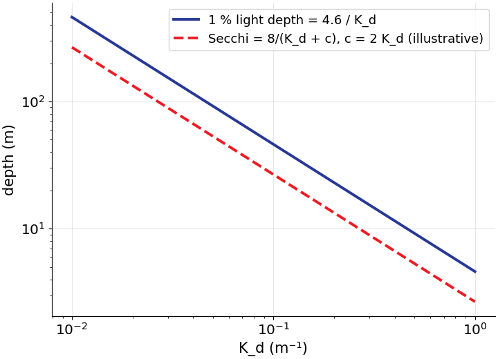

G · Light field (textbook)
AOPs, K_d, reflectance, Secchi depth, IOP–AOP link: NOT in the lecture file, from the textbook
Light field: IOPs and AOPs
IOPs
a, b, β, c
medium only
medium only
AOPs
Kd, R, Rrs
medium + light field
medium + light field
Not in the lecture file
Outline slide 9 lists “Link between IOPs and the light field” but no slide covers it; this is textbook content
Kd, euphotic and Secchi depth
Reflectances
Diffuse attenuation and reflectance
| Quantity | Definition | Unit |
|---|---|---|
| Kd | −d ln Ed/dz | m⁻¹ |
| Ed(z) | Ed(0) exp(−Kd z) | W m⁻² nm⁻¹ |
| R | Eu / Ed | — |
| Rrs | Lw / Ed | sr⁻¹ |
Source
Textbook (oceanopticsbook.info): K functions and Reflectances; not in the lecture filePenetration and euphotic depth

Own computation (textbook formulas): 1 % light depth = 4.6/Kd; Secchi = 8/(Kd+c)
Euphotic depth: numbers
| Kd (m⁻¹) | 1 % depth (m) | 1/Kd (m) |
|---|---|---|
| 0.03 | 153.5 | 33.3 |
| 0.04 | 115.1 | 25.0 |
| 0.1 | 46.1 | 10.0 |
| 0.3 | 15.4 | 3.3 |
| 1.0 | 4.6 | 1.0 |
Secchi depth
| Formula | Note |
|---|---|
| zSD = Γ / (Kdv + cv) | Γ ≈ 6–9, default 8 |
| zSD = γ / (2.5 Kd(λmin)) | Lee et al. 2015; satellite-friendly |
| Example Kd = 0.1, c = 0.2 | zSD = 26.7 m (Γ = 8) |
Textbook note
Γ varies from about 6 to 9 with the water reflectance; the formula must be iterated because Kdv and cv are averaged to zSDCase 1 versus Case 2 reflectance
Case 1
Blue minimum at 440 nm; maximum shifts to 565–570 nm as Chl rises; fluorescence peak 685 nm
Case 2
Higher R, no 440 nm minimum, convex shape, maximum ≈ 560 nm, R rises with turbidity
Key points
- AOPs depend on the light field; IOPs do not
- Kd ≡ −d ln Ed/dz; z1% = 4.6/Kd
- Rrs = Lw/Ed in sr⁻¹
- Secchi: z = Γ/(Kd + c), Γ ≈ 8